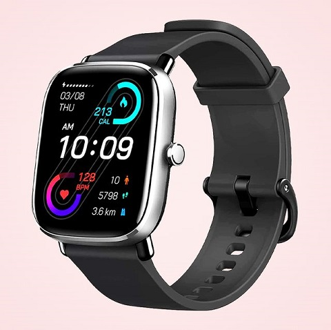

Smart watches for Health Monitoring

Smart watches are a modern easy hi - tech way to moniter ones health in day todays like by oneslf. Which is eaier to record manage, save, suggest and take actions fast.
Time - which is essential in saving lives is the major part of this tech meds.
Smart Watches - either is Apple watch or Fit-bit or Samsung watch or any other smart watches available in makest does one job
"Prevention is better than cure "
They detect early signs of diseases by picking up warning signs though digital health sensors which is proven in certain heart diseases. Smart watches have below features
- They monitor heart beat
- Miles covered by walking or running in day todays life
- On our Consent send data to our docters immediately to take necessary actions
This page is created by Vishnu Arun